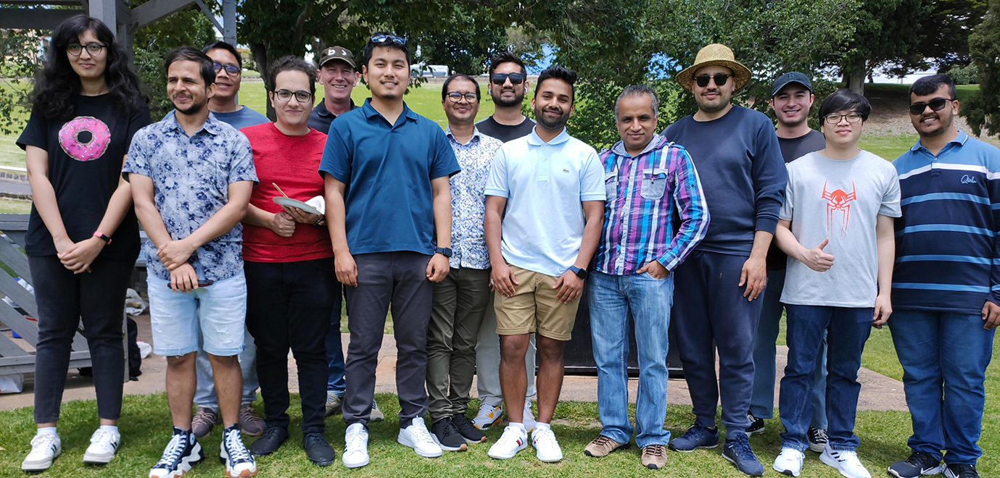

Machine Learning for Decision Support (MLDS) Group
School of Information Technology

Welcome to the Machine Learning for Decision Support (MLDS) Group
Our research group focuses on developing data-driven decision-making techniques to extract valuable
knowledge from data. We strive to develop fast, effective and scalable data analysis and machine
learning algorithms, with a particular emphasis on descriptive, predictive, and prescriptive analytics
of large-scale data. Our research is motivated by fundamental questions and emerging challenges in
data science, and we aim to provide innovative solutions that have a positive impact on society.
We pride ourselves on being a highly collaborative and interdisciplinary research group that actively
seeks out partnerships with industry and other academic institutions. We place great emphasis on building
and deploying prototypes, and we experimentally validate our research ideas. Our goal is to translate our
research findings into practical applications that benefit society and advance the field of data science.
Recent News
December, 2023
Fully funded Indsutry PhD Opportunity

If you are looking for a fully funded PhD opportunity in Machine/Deep Learning and interested to develop intelligent solutions to analyse high-performance sport matches, we have a great opportunity for you. You will work very closely with academics, athletes, coaches, and sport administrators; and have an opportunity to have a valuable impact on the preparation of elite Australian Olympic and Paralympic athletes. We are looking for someone with a very strong background in Machine/Deep Learning, Computer Vision, and Python Programming. Prior experience in video processing and/or sport analytics will be advantageous. The position must be filled as soon as possible, so preference will be given to those who are already in Australia (PR or Citizenship is NOT required). If it sounds like an ideal position for you, please send your resume highlighting relevant skills to sunil.aryal@deakin.edu.au asap.
September 2023
Research transition success story: Our collaboration with the US Space Force
We are very happy to see our collaboration with US Space Force (USSF) Delta 2 featured in the Basic Research Innovation Collaboration Center (BRICC) news as a basic research transition success story. We have been working with USSF Delta 2 since late 2021 to use anomaly detection algorithms we developed in the satellite object tracking problem.
November, 2022
Available PhD positions on machine learning for healthcare
We have two PhD positions available as part of our cotutelle program between Coventry University (UK) and Deakin University to work on machine learning for healthcare. Here is an awesome video of Deakin University located in the beautiful city of Geelong. Interested? Contact us!